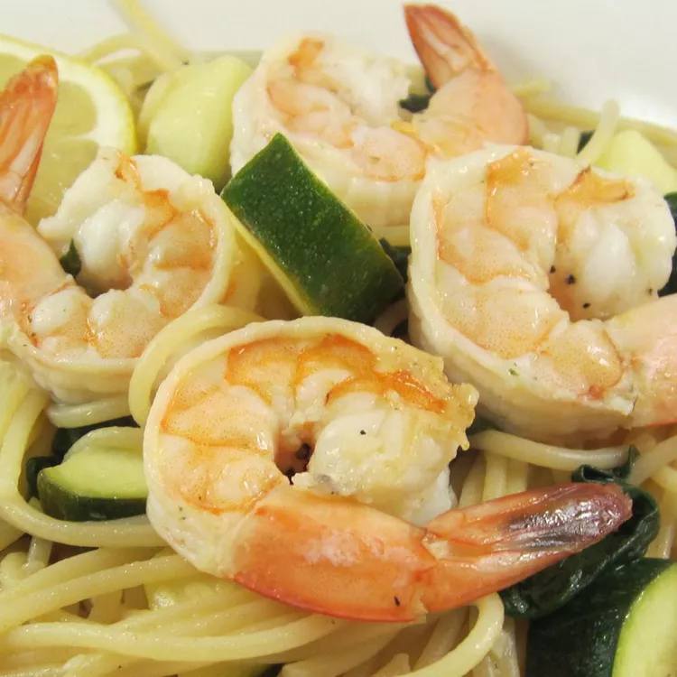

Shrimp

This shrimp pasta with olive oil is a light, flavorful, quick, and easy dinner. I eyeballed most of the recipe, but here's what I came up with. It has a little kick but not enough to overwhelm the fresh ingredients' flavors.
Ingredients
- 1 (8 ounce) package spaghetti
- ¼ cup olive oil, divided
- 1 (10 ounce) package fresh spinach
- 1 zucchini, chopped
- 1 yellow squash, chopped
- 2 tablespoons pine nuts, or to taste
- 2 teaspoons minced garlic
- 1 pound uncooked medium shrimp, peeled and deveined
- 4 teaspoons lemon juice, divided
- 2 teaspoons chopped fresh parsley
- 1 teaspoon red pepper flakes
- salt and ground black pepper to taste
Steps
- Bring a large pot of lightly salted water to a boil. Cook spaghetti in boiling water, occasionally stirring until cooked through but firm to the bite, about 12 minutes. Drain and return spaghetti to the pot
- 1 tablespoon olive oil in a skillet over medium heat; cook and stir spinach, zucchini, squash, pine nuts, and garlic in hot oil until vegetables are tender, 5 to 7 minutes. Transfer mixture to a bowl.
- Heat another tablespoon olive oil in the same skillet over medium heat; cook and stir shrimp and 2 teaspoons lemon juice until shrimp are bright pink and centers are opaque, about 5 minutes. Remove from heat.
- Combine remaining 2 tablespoons olive oil, 2 teaspoons lemon juice, parsley, and red pepper flakes in a bowl. Season with salt and pepper.
- Stir vegetable mixture, shrimp, and olive oil mixture into spaghetti until combined.